Chapter 9: Standards, Careers & Learning¶
Everything in this guide rests on standards written by a handful of bodies, and increasingly on laws that require roots of trust and PKI. This final chapter maps those standards and regulations, walks through the real careers in platform security and PKI, lists the certifications and resources worth your time, and gives you a hands-on lab plan, interview questions and a twelve-week study plan to go from reading about trust to being paid to build it.
9.1 TCG Standards: TPM 2.0, DICE and Reference Integrity¶
The Trusted Computing Group (TCG) is the industry body that writes the specifications for TPMs and related hardware trust. If you work with TPMs, measured boot or device identity, these are the rulebooks the chips and software follow.
Think of it like…
The TCG is like the body that defines the standard for electrical plugs and sockets: dozens of companies build the parts, but because they all follow one specification, a TPM from one vendor works with software written by another.
Real-world example
When Priya's team builds an attestation service, they rely on the TCG's TPM 2.0 library specification to know exactly what a quote looks like, and the PC Client Platform spec to know which PCRs record which boot stages. Because both are standardised, their code works across Infineon, Nuvoton and firmware TPMs.
How it works¶
- The TCG publishes the TPM 2.0 library specification: the commands, structures and algorithms a TPM must implement.
- Platform specifications (PC Client, mobile, automotive) say how TPMs are used on each kind of device.
- DICE defines lightweight device identity for chips too small for a full TPM.
- Reference Integrity Manifests (RIM) describe the expected measurements a verifier compares against.
- Members and implementers follow these so products interoperate and can be certified.
Who uses it
Firmware and platform engineers, TPM and attestation developers, and security architects designing hardware-rooted systems.
Key takeaway
Know that the TPM 2.0 library is standardised internationally as ISO/IEC 11889, and that the latest TCG revisions (v185, March 2026) added post-quantum ML-KEM and ML-DSA support — a current detail interviewers like.
Going deeper
- The TPM 2.0 library specification is published as Family 2.0; revision 1.83 dates from March 2024, with later revisions (184, 185) adding errata and, in v185 (March 2026), post-quantum ML-KEM and ML-DSA support for endorsement and attestation keys.
- The PC Client Platform TPM Profile pins down how PCs use TPMs: which PCRs record firmware, option ROMs, boot loader and OS, and how the TCG event log is formatted.
- DICE (Device Identifier Composition Engine) derives a layered identity from a unique device secret and each boot layer's measurement, giving cheap microcontrollers a hardware identity without a full TPM.
- A Reference Integrity Manifest (RIM) is the signed set of expected measurements for a platform, so a verifier can compare a device's reported PCRs against what the manufacturer says they should be.
- TCG specs feed directly into certification: the TPM protection profiles evaluated under Common Criteria are built on these documents, which is why a certified TPM behaves predictably.
Common mistakes & misconceptions
- Confusing the TPM 2.0 library spec (what a TPM does) with the PC Client profile (how a PC uses it) — they are separate documents and interviews probe the distinction.
- Assuming all TPM 2.0 chips are identical; vendors implement the same spec but differ in performance, certification and optional algorithms.
- Thinking DICE is a TPM; it is a much lighter identity scheme for devices that cannot host a full TPM.
Key chips, standards, protocols, products & terms¶
| Name | What it does | Example |
|---|---|---|
| TCG (Trusted Computing Group) Industry consortium · Organisation · Current · General |
The industry body that writes TPM and trusted-computing specifications adopted by chip and software vendors. | The TCG publishes the TPM 2.0 library spec that every TPM chip implements. |
| TPM 2.0 Library Specification TCG / ISO/IEC 11889 · Specification · Current · Platform & OS |
The core spec defining a TPM's commands, data structures and algorithms; revision 1.83 (2024), v185 (2026) adds PQC. | An attestation library parses TPM quotes exactly as the library specification defines them. |
| PC Client Platform TPM Profile TCG · Specification · Current · Firmware & boot |
Defines how PCs use the TPM: PCR allocation for boot stages and the TCG event-log format. | It specifies that firmware code measures into PCR 0 and the boot loader into later PCRs. |
| DICE TCG · Specification · Current · Silicon |
Device Identifier Composition Engine: derives layered device identity from a unique secret and measured code. | A microcontroller too small for a TPM uses DICE to get a hardware-rooted identity. |
| Reference Integrity Manifest (RIM) TCG · Specification · Current · Firmware & boot |
A signed statement of a platform's expected measurements, used by verifiers to judge attestation evidence. | A verifier compares a laptop's reported PCRs against the vendor's RIM. |
| TCG event log TCG · Specification · Current · Firmware & boot |
The structured record of everything measured into PCRs during boot, so a verifier can replay and interpret them. | An attestation service parses the event log to see exactly which components were measured. |
| TPM 2.0 PQC support (v185) TCG (2026) · Specification · Emerging · Platform & OS |
The 2026 TPM library revision adding ML-KEM and ML-DSA so TPM keys can be quantum-safe. | A future TPM issues an ML-DSA attestation key following the v185 specification. |
| TCG membership tiers TCG · Concept · Current · General |
The promoter/contributor/adopter levels that let companies shape and implement TCG specifications. | A chip vendor joins as a contributor to influence the next TPM profile. |
9.2 NIST Standards: FIPS, SP 800 and the PQC Family¶
NIST, the US standards agency, writes many of the documents that define good cryptography and platform security. Its FIPS publications set approved algorithms, and its SP 800 series gives detailed guidance that much of the world, not just the US government, follows.
Key NIST documents at a glance
| Topic | Why it matters | |
|---|---|---|
| FIPS 140-3 | crypto modules | validates HSMs (levels 1-4) |
| FIPS 186-5 | signatures | RSA, ECDSA, EdDSA |
| FIPS 203/204/205 | post-quantum | ML-KEM, ML-DSA, SLH-DSA |
| SP 800-57 | key management | key sizes and lifetimes |
| SP 800-193 | firmware resiliency | protect/detect/recover |
FIPS = mandatory algorithm/module standards; SP 800 = detailed guidance.
Think of it like…
NIST is like the body that writes the national building code. You do not have to be a government builder to follow it; everyone does, because insurers, customers and regulators treat it as the baseline for 'done properly'.
Real-world example
When Ridgeway designs a key-management system, it reaches for NIST SP 800-57 for key lifetimes, FIPS 140-3 to choose a validated HSM, and FIPS 203/204 for the post-quantum algorithms. None of these are legally required for Ridgeway, but using them makes audits and customer trust far easier.
How it works¶
- FIPS publications define approved algorithms (e.g. FIPS 186-5 for signatures, 203/204/205 for PQC) and module requirements (FIPS 140-3).
- SP 800-series documents give practical guidance on keys, firmware and platform resiliency.
- Vendors validate cryptographic modules against FIPS 140-3 through the CMVP programme.
- Agencies and industry cite these documents in policy and contracts.
- NIST updates them as threats evolve, most recently for post-quantum cryptography.
Who uses it
Cryptography and PKI engineers, HSM and product-security teams, compliance specialists and anyone building for regulated markets.
Key takeaway
Memorise the PQC trio: FIPS 203 is ML-KEM (key exchange), FIPS 204 is ML-DSA (signatures) and FIPS 205 is SLH-DSA (hash-based signatures), all finalised in 2024 — the single most asked post-quantum fact.
Going deeper
- FIPS 140-3 is the current standard for validating cryptographic modules at four security levels; it aligns with ISO/IEC 19790, and from 21 September 2026 all older FIPS 140-2 certificates move to the CMVP Historical list.
- FIPS 186-5 (2023) is the Digital Signature Standard, approving RSA, ECDSA and, newly, EdDSA (Ed25519/Ed448); the PQC signatures live in their own publications (204 and 205).
- SP 800-57 is the go-to for key management: recommended key sizes, crypto-periods and the 112/128-bit security levels that underpin the post-quantum deprecation dates.
- SP 800-193 (firmware resiliency), 800-147 (BIOS protection) and 800-155 (BIOS integrity measurement) define protect/detect/recover for platform firmware, and SP 800-164 covers hardware-rooted security on mobile devices.
- NIST IR 8547, still a draft in 2026, lays out the transition plan: deprecate quantum-vulnerable RSA/ECC after 2030 and disallow them after 2035, which is now the planning baseline for US agencies.
Common mistakes & misconceptions
- Saying 'FIPS 140-3 certifies algorithms' — it validates cryptographic modules (like HSMs); the approved algorithms come from separate FIPS and SP documents.
- Quoting FIPS 140-2 as current; new validations are 140-3, and 140-2 certificates become Historical in September 2026.
- Treating NIST IR 8547's 2030/2035 dates as finalised law; it remains a draft, though agencies already plan against it.
Key chips, standards, protocols, products & terms¶
| Name | What it does | Example |
|---|---|---|
| NIST US Department of Commerce · Organisation · Current · General |
The US standards agency whose FIPS and SP 800 publications set widely followed cryptography and security baselines. | A vendor cites NIST standards to show its product uses approved cryptography. |
| FIPS 140-3 NIST · Standard · Current · General |
The standard for validating cryptographic modules such as HSMs, at four security levels; aligns with ISO/IEC 19790. | Ridgeway buys a FIPS 140-3 Level 3 HSM to protect its CA keys. |
| FIPS 186-5 NIST · Standard · Current · General |
The Digital Signature Standard approving RSA, ECDSA and EdDSA signature algorithms. | A CA chooses ECDSA P-384 per FIPS 186-5 for its new intermediate. |
| FIPS 203 (ML-KEM) NIST (2024) · Standard · Emerging · General |
The post-quantum key-encapsulation standard derived from CRYSTALS-Kyber. | Hybrid TLS key exchange uses ML-KEM-768 as defined in FIPS 203. |
| FIPS 204 (ML-DSA) NIST (2024) · Standard · Emerging · General |
The post-quantum digital-signature standard derived from CRYSTALS-Dilithium. | A CA issues ML-DSA certificates following FIPS 204. |
| FIPS 205 (SLH-DSA) NIST (2024) · Standard · Emerging · General |
The stateless hash-based post-quantum signature standard derived from SPHINCS+. | A firmware root-of-trust team evaluates SLH-DSA from FIPS 205 for long-lived signing. |
| SP 800-57 NIST · Standard · Current · General |
Key-management recommendations: algorithm choices, key sizes and crypto-periods. | A team uses SP 800-57 to decide how long a symmetric key may be used. |
| SP 800-193 NIST · Standard · Current · Firmware & boot |
Platform firmware resiliency guidelines built on the protect, detect and recover principles. | A server BMC follows SP 800-193 so corrupted firmware can be detected and recovered. |
| SP 800-164 NIST · Standard · Current · Mobile |
Guidelines for hardware-rooted security capabilities on mobile devices. | A phone platform maps its secure-boot and attestation features to SP 800-164 concepts. |
| CMVP NIST & CCCS · Service · Current · General |
The Cryptographic Module Validation Program that tests and certifies modules against FIPS 140-3. | An HSM appears on the CMVP validated-modules list after passing a lab evaluation. |
| NIST IR 8547 NIST · Standard · Emerging · General |
The draft NIST interagency report in the PQC family that lays out the expected RSA/ECC retirement timeline. | A crypto engineer cites IR 8547 next to the FIPS 203/204/205 standards when mapping PQC requirements. |
9.3 IETF RFCs: The Protocols of PKI and Attestation¶
The IETF writes the RFCs that define how certificates, revocation, transparency, enrolment and attestation actually work on the internet. If NIST says what cryptography to use, the IETF says how to speak it over the wire.
Think of it like…
If NIST writes the dictionary of approved words, the IETF writes the grammar and the postal rules: how to format a certificate, how to ask if one is revoked, and how to request a new one, so independent software can hold a conversation.
Real-world example
A developer building a certificate tool keeps a shelf of RFCs open: RFC 5280 for what a valid X.509 certificate looks like, RFC 6960 for OCSP revocation checks, RFC 8555 for ACME issuance, and RFC 9334 for the attestation architecture their device-health feature uses.
How it works¶
- An idea becomes an internet-draft in a working group (e.g. LAMPS for PKI, RATS for attestation).
- The group refines it through review and running-code interoperability.
- The IESG approves it and it is published as a numbered RFC.
- Implementers build to the RFC; later RFCs update or obsolete earlier ones.
- Reading the exact RFC is how you resolve disputes about correct behaviour.
Who uses it
Protocol and PKI engineers, security-tool developers, and anyone who must implement certificate or attestation behaviour correctly.
Key takeaway
Learn the headline numbers: 5280 (X.509 profile), 6960 (OCSP), 6962 and 9162 (Certificate Transparency), 8555 (ACME), 9334 (RATS attestation) and 3647 (CP/CPS format). They recur in interviews and documentation.
Going deeper
- RFC 5280 is the internet profile of X.509: it defines which fields and extensions are valid and the path-validation algorithm every certificate verifier implements.
- Revocation and transparency: RFC 6960 defines OCSP, while Certificate Transparency runs on RFC 6962; RFC 9162 (CT 2.0, 2021) was published but browsers never adopted it, and logs now also use the static-CT API (Sunlight, Tessera).
- Enrolment lives in several RFCs: 8555 (ACME) and 9773 (ACME Renewal Information), 7030 (EST), 8894 (SCEP) and 9810/9811 (the updated CMP), covering web and device issuance.
- The RATS working group produced RFC 9334 (the remote attestation architecture of attester, verifier and relying party) and RFC 9711 (Entity Attestation Token), the backbone of modern attestation.
- Post-quantum PKI is arriving as RFCs too: RFC 9881 (2025) defines ML-DSA in certificates and RFC 9935 (2026) defines ML-KEM in certificates, from the LAMPS working group.
Common mistakes & misconceptions
- Citing an obsoleted RFC: CMP's current core is RFC 9810, not RFC 4210, and Certificate Transparency's modern spec is RFC 9162 alongside 6962.
- Assuming an RFC describes a law or a product; it describes a protocol, and real deployments add their own policy on top.
- Reading summaries instead of the RFC when behaviour is disputed — the normative 'MUST/SHOULD' wording in the document is what counts.
Key chips, standards, protocols, products & terms¶
| Name | What it does | Example |
|---|---|---|
| IETF Internet Engineering Task Force · Organisation · Current · General |
The open body that develops the RFC standards defining internet protocols, including PKI and attestation. | The IETF's LAMPS working group updates the certificate and S/MIME standards. |
| RFC 5280 IETF · RFC · Current · Web PKI |
The internet profile of X.509 certificates and CRLs, including the path-validation algorithm. | A verifier follows RFC 5280 to decide whether a certificate chain is valid. |
| RFC 6960 (OCSP) IETF · RFC · Current · Web PKI |
The Online Certificate Status Protocol for asking whether a single certificate has been revoked. | A browser (or stapling server) uses OCSP per RFC 6960 to check revocation. |
| RFC 9162 (CT 2.0) IETF · RFC · Current · Web PKI |
The CT 2.0 specification (2021); browsers never adopted it, so public logs still run on RFC 6962 plus the newer static-CT API. | Despite RFC 9162, production CT logs use RFC 6962 or static-CT implementations like Sunlight and Tessera. |
| RFC 8555 (ACME) IETF · RFC · Current · Web PKI |
The protocol for automated domain-control validation and certificate issuance and renewal. | Let's Encrypt and cert-manager both implement RFC 8555. |
| RFC 9334 (RATS) IETF · RFC · Current · Trusted execution |
The Remote ATtestation procedureS architecture defining attester, verifier and relying party roles. | A confidential-computing attestation service is designed around RFC 9334 roles. |
| RFC 3647 (CP/CPS) IETF · RFC · Current · Private PKI |
The framework for writing Certificate Policy and Certification Practice Statement documents. | A CA structures its CPS using the RFC 3647 section outline so auditors can navigate it. |
| RFC 9810 (CMP) IETF (2025) · RFC · Current · Devices & IoT |
The updated Certificate Management Protocol core, obsoleting RFC 4210 and adding KEM key support. | An industrial PKI vendor updates its CMP stack to RFC 9810. |
| RFC 9881 (ML-DSA in certs) IETF (2025) · RFC · Emerging · Web PKI |
The 2025 LAMPS-group RFC in the PKI standards family specifying ML-DSA public keys and signatures in X.509. | It sits alongside RFC 9935 (ML-KEM) as the pair of post-quantum certificate RFCs. |
| Internet-draft process IETF · Concept · Current · General |
How a proposal becomes an RFC: working-group drafts, review, running code and IESG approval. | ACME Renewal Information progressed from draft to RFC 9773 in 2025. |
9.4 ISO/IEC, Common Criteria and ETSI¶
Outside the US-centric NIST world, international and European bodies write the standards that let products be certified and trusted across borders. ISO/IEC publishes global standards, Common Criteria evaluates security products, and ETSI writes the European rules behind electronic signatures and trust services.
Who writes what, and the US equivalent
| Covers | US counterpart | |
|---|---|---|
| ISO/IEC 11889 | TPM 2.0 library | TCG spec |
| ISO/IEC 19790 | crypto modules | FIPS 140-3 |
| ISO/IEC 15408 | product evaluation | Common Criteria |
| ETSI EN 319 411 | trust-service policy | WebTrust (analogous) |
International and European standards often mirror NIST documents.
Think of it like…
These are like international safety-rating schemes for cars: ISO sets the global specifications, Common Criteria is the independent crash-test lab, and ETSI writes the European road rules that say which rated cars are allowed on the motorway.
Real-world example
A European trust-service provider, Aegis TSP, must meet ETSI EN 319 411 to issue qualified certificates recognised across the EU. Its HSMs carry Common Criteria certificates, and it points to ISO/IEC 19790 and 11889 to show its modules and TPMs meet global baselines.
How it works¶
- ISO/IEC JTC 1 publishes global standards (e.g. 11889 for TPM, 19790 for crypto modules, 15408 for evaluation).
- Common Criteria (ISO/IEC 15408) evaluates products against protection profiles at assurance levels (EAL1-7).
- ETSI writes European standards for trust services, signatures and their formats.
- Auditors and certification bodies assess products and services against these.
- Regulators (like eIDAS) reference them to grant legal recognition.
Who uses it
Product-security and certification engineers, HSM and smart-card vendors, qualified trust-service providers and EU-market compliance teams.
Key takeaway
Map the equivalents: ISO/IEC 19790 is the international sibling of FIPS 140-3, ISO/IEC 11889 is the TPM 2.0 library, and ISO/IEC 15408 is Common Criteria — knowing the number-to-name mapping impresses interviewers.
Going deeper
- ISO/IEC 15408 (Common Criteria) evaluates products against a Protection Profile at Evaluation Assurance Levels EAL1-7; TPMs, smart cards and HSMs commonly carry CC certificates, and the EU's EUCC scheme is replacing national schemes.
- ISO/IEC 19790:2025 (third edition) is the international standard for cryptographic-module security that FIPS 140-3 is harmonised with, so a module can map one evaluation to both worlds.
- ISO/IEC 11889 is simply the TPM 2.0 library specification published as an international standard, which is why government procurements can require 'ISO/IEC 11889 TPMs'.
- ETSI's EN 319 4xx series governs European trust-service providers: EN 319 411 sets policy requirements for issuing certificates, and the EN 319 1xx series defines the AdES signature formats (PAdES, XAdES, CAdES).
- ETSI standards are the technical backbone of eIDAS: a qualified trust-service provider is audited against them, which is what gives a qualified electronic signature its legal weight across the EU.
Common mistakes & misconceptions
- Assuming a high EAL number means 'more secure' in general; it means more thoroughly evaluated against a specific protection profile, which is not the same thing.
- Treating FIPS 140-3 and ISO/IEC 19790 as unrelated; they are deliberately harmonised, so a module is often evaluated once for both.
- Confusing ETSI (European technical standards) with eIDAS (the EU law that references them) — the standards are the 'how', the regulation is the 'must'.
Key chips, standards, protocols, products & terms¶
| Name | What it does | Example |
|---|---|---|
| ISO/IEC JTC 1 ISO & IEC · Organisation · Current · General |
The joint technical committee that publishes international IT standards, including those for security and cryptography. | JTC 1/SC 27 publishes the security standards referenced worldwide. |
| ISO/IEC 11889 ISO/IEC · Standard · Current · Platform & OS |
The international publication of the TPM 2.0 library specification. | A government tender requires TPMs conforming to ISO/IEC 11889. |
| ISO/IEC 19790:2025 ISO/IEC · Standard · Current · General |
The international standard for cryptographic-module security requirements, harmonised with FIPS 140-3. | An HSM vendor maps a single evaluation to both ISO/IEC 19790 and FIPS 140-3. |
| Common Criteria (ISO/IEC 15408) ISO/IEC / CC community · Standard · Current · General |
A framework for independently evaluating security products against protection profiles at assurance levels EAL1-7. | A smart-card chip ships with a Common Criteria EAL5+ certificate. |
| Protection Profile Common Criteria · Concept · Current · General |
A standardised set of security requirements a product class must meet to be evaluated and certified. | TPMs are evaluated against the TCG-defined TPM protection profile. |
| EUCC scheme ENISA / EU · Regulation · Emerging · General |
The EU-wide cybersecurity certification scheme (under the Cybersecurity Act) based on Common Criteria. | A TPM is certified under EUCC for recognition across EU member states. |
| ETSI European Telecommunications Standards Institute · Organisation · Current · General |
The European body whose EN 319 standards define trust services and electronic-signature formats. | A trust-service provider is audited against ETSI EN 319 411. |
| ETSI EN 319 411 ETSI · Standard · Current · Web PKI |
Policy and security requirements for trust-service providers issuing certificates, used for eIDAS compliance. | Aegis TSP passes an EN 319 411 audit to issue qualified certificates. |
| ETSI AdES formats ETSI · Standard · Current · General |
The EN 319 1xx standards defining PAdES, XAdES and CAdES advanced electronic-signature formats. | An e-government portal accepts PAdES-signed PDFs defined by ETSI. |
9.5 Industry Bodies: DMTF SPDM, OCP, GlobalPlatform, CA/B Forum¶
Beyond the big standards agencies, industry consortia solve specific problems: how components attest to each other inside a server, how data-centre hardware is secured, how secure elements run applets, and what rules public CAs must follow. These bodies shape day-to-day practice.
Think of it like…
If NIST and ISO are the national governments, these are the trade associations: the one that agrees how car parts plug together, the one that sets rules for the taxi trade, each solving a practical problem the big bodies leave open.
Real-world example
A server maker, Cindermoor Systems, uses DMTF SPDM so its BMC can verify each component's firmware, follows OCP security guidelines for the chassis design, builds its secure element to GlobalPlatform specs, and ships TLS certificates that comply with the CA/Browser Forum Baseline Requirements.
How it works¶
- DMTF defines SPDM, the protocol components use to authenticate and measure each other.
- The Open Compute Project (OCP) publishes open hardware and security specifications for data-centre gear.
- GlobalPlatform standardises secure elements, TEEs and how applets are managed on them.
- The CA/Browser Forum writes the Baseline Requirements that public CAs must follow.
- Vendors implement these so parts, platforms and certificates interoperate and are trusted.
Who uses it
Hardware and firmware security engineers, data-centre and server designers, secure-element developers and public-CA compliance teams.
Key takeaway
Know each body's one job: DMTF = SPDM (component attestation), OCP = open data-centre hardware security, GlobalPlatform = secure elements and TEEs, CA/Browser Forum = public-TLS rules. One line each is enough for interviews.
Going deeper
- DMTF's SPDM (Security Protocol and Data Model, DSP0274) lets a device like a BMC authenticate a component, retrieve its certificates and read firmware measurements; version 1.4 arrived in 2025, extending session and attestation features.
- The Open Compute Project drives open server security: Project Cerberus (a hardware root of trust for firmware), DC-SCM modular management, and Caliptra, an open silicon RoT block adopted across the industry.
- GlobalPlatform standardises how secure elements and TEEs are structured and how applications are loaded and managed, underpinning SIMs, payment chips and mobile trusted applications.
- The CA/Browser Forum is not a government but its Baseline Requirements are effectively mandatory, because browser root programs require compliance; it is where ballots like the SC-081 lifetime reduction and CSC-31 code-signing change are decided.
- The Connectivity Standards Alliance (Matter) and FIDO Alliance (passkeys, device onboarding) are further industry bodies whose specifications define device and authentication trust at consumer scale.
Common mistakes & misconceptions
- Thinking the CA/Browser Forum can force a CA to comply; its leverage is indirect — browser root programs enforce the rules by threatening removal from trust stores.
- Confusing SPDM (how components attest inside a platform) with RATS (the IETF architecture for remote attestation); they operate at different layers.
- Assuming OCP is only about cheap hardware; its security projects (Cerberus, Caliptra) are serious roots of trust used by hyperscalers.
Key chips, standards, protocols, products & terms¶
| Name | What it does | Example |
|---|---|---|
| DMTF Distributed Management Task Force · Organisation · Current · General |
The body that defines SPDM and management standards for authenticating and measuring hardware components. | DMTF publishes SPDM so a server BMC can verify each add-in card's firmware. |
| SPDM (DSP0274) DMTF · Protocol · Current · Silicon |
Security Protocol and Data Model: lets components authenticate, exchange certificates and report firmware measurements. | A NIC proves its firmware integrity to the host over SPDM before being trusted. |
| Open Compute Project (OCP) OCP Foundation · Organisation · Current · Silicon |
An industry body publishing open data-centre hardware and security specifications used by hyperscalers. | A cloud server is built to OCP specifications including a hardware root of trust. |
| Project Cerberus OCP (Microsoft origin) · Specification · Current · Firmware & boot |
An OCP hardware root of trust that protects, detects and recovers platform firmware. | A server uses a Cerberus RoT to verify BIOS and BMC firmware before boot. |
| Caliptra OCP / CHIPS Alliance · Specification · Emerging · Silicon |
An open-source silicon root-of-trust block for integration into data-centre chips. | A CPU vendor embeds a Caliptra RoT block for measured boot and identity. |
| GlobalPlatform GlobalPlatform Inc. · Organisation · Current · Devices & IoT |
The body standardising secure elements, TEEs and the management of applications on them. | A payment SIM runs applets managed per GlobalPlatform specifications. |
| CA/Browser Forum CAs and browser vendors · Organisation · Current · Web PKI |
The group whose Baseline Requirements set the rules public CAs must follow to stay trusted. | The Forum's ballots set TLS certificate lifetimes and validation methods. |
| Baseline Requirements (BRs) CA/Browser Forum · Standard · Current · Web PKI |
The mandatory rules for issuing publicly trusted certificates, enforced via browser root programs. | A CA must follow the BRs on validation and lifetime or risk distrust. |
| FIDO Alliance Industry consortium · Organisation · Current · General |
The body behind FIDO2/passkeys and FIDO Device Onboard, defining phishing-resistant authentication and onboarding. | Passkeys sign in to websites using FIDO2 credentials rooted in device hardware. |
9.6 Regulations Driving Roots of Trust and PKI¶
Increasingly, the law requires the things this guide describes. New regulations demand secure-by-design products, post-quantum readiness, digital identity wallets and PKI for whole industries. Knowing them tells you why organisations suddenly care about trust.
Think of it like…
Regulations are like seatbelt and emissions laws for software: once optional good practice, now legally required, with deadlines and penalties that turn 'we should' into 'we must by this date'.
Real-world example
A European IoT maker, Voltaire Devices, must meet the EU Cyber Resilience Act: from September 2026 it reports exploited vulnerabilities within 24 hours, and from December 2027 its products need secure-by-design features, an SBOM and CE marking. Separately, US federal buyers now expect post-quantum-ready products under Executive Order 14306.
How it works¶
- A regulator identifies a risk (insecure products, quantum threat, weak digital identity).
- It publishes a law with scope, requirements and staged deadlines.
- Standards bodies' specifications become the practical way to comply.
- Vendors and operators implement roots of trust, PKI or attestation to meet them.
- Audits, market surveillance or procurement rules enforce compliance.
Who uses it
Product-security leads, compliance and legal teams, PKI architects and anyone selling into the EU, US federal or regulated markets.
Key takeaway
Have two or three dates ready: EU CRA reporting from 11 September 2026 and full application 11 December 2027; EU member states must offer an EUDI Wallet by late 2026; US EO 14306 pushes TLS 1.3 and PQC readiness. Dates show you follow the field.
Going deeper
- The EU Cyber Resilience Act (CRA) mandates secure-by-design for products with digital elements: vulnerability-reporting obligations apply from 11 September 2026 and the full requirements (SBOMs, update support, CE marking) from 11 December 2027, pushing hardware roots of trust and signed updates into mainstream products.
- eIDAS 2.0 (Regulation (EU) 2024/1183) creates the European Digital Identity Wallet; member states must make a certified EUDI Wallet available to citizens by late 2026, built on PKI and qualified trust services.
- US Executive Order 14306 (June 2025) directed CISA to publish PQC-ready product categories (released January 2026) and agencies to support TLS 1.3 by January 2030, while CNSA 2.0 sets the deeper national-security PQC timeline.
- Sector rules add PKI requirements: PCI DSS v4 tightens key and certificate management for payments, UNECE R155 with ISO/SAE 21434 mandates cybersecurity management (and effectively PKI) for new vehicles, and FDA guidance requires an SBOM and secure updates for medical devices.
- National PKIs are legally anchored too: India's CCA under the IT Act licenses certifying authorities, and government bridge PKIs (US Federal PKI, DoD PKI) set requirements for anyone transacting with them.
Common mistakes & misconceptions
- Treating the CRA as only about reporting: the heavier secure-by-design and SBOM obligations arrive in December 2027 and need design changes started now.
- Assuming post-quantum mandates are far off; US procurement already references PQC readiness, so products specified today may be rejected tomorrow if they cannot migrate.
- Thinking regulations and standards are the same thing — the regulation sets the legal 'must', while an ETSI or NIST standard is the practical 'how' you point to for compliance.
Key chips, standards, protocols, products & terms¶
| Name | What it does | Example |
|---|---|---|
| EU Cyber Resilience Act (CRA) European Union · Regulation · Emerging · Devices & IoT |
A law mandating secure-by-design for products with digital elements, with staged deadlines in 2026-2027. | Voltaire Devices adds a hardware root of trust and signed updates to meet CRA requirements. |
| eIDAS 2.0 / EUDI Wallet European Union · Regulation · Emerging · General |
Regulation (EU) 2024/1183 creating a European Digital Identity Wallet backed by PKI and qualified trust services. | A bank prepares to accept the EUDI Wallet as citizens receive it from 2026. |
| Executive Order 14306 US White House (2025) · Regulation · Emerging · General |
A US order driving post-quantum readiness, a CISA PQC product list and TLS 1.3 support by 2030. | A federal contractor checks the CISA PQC category list before proposing products. |
| CNSA 2.0 mandate NSA · Regulation · Emerging · General |
The requirement that US national-security systems adopt post-quantum algorithms on a staged timeline to 2033. | A defence supplier plans PQC code signing by 2030 to meet CNSA 2.0. |
| PCI DSS v4 PCI Security Standards Council · Regulation · Current · General |
The payment-card security standard, v4 tightening cryptography, key and certificate management requirements. | A payment processor inventories and rotates certificates to satisfy PCI DSS v4 controls. |
| UNECE R155 / ISO 21434 UNECE / ISO & SAE · Regulation · Current · Devices & IoT |
Automotive cybersecurity rules requiring a management system and, in practice, PKI for vehicle software and V2X. | A carmaker runs a V2X PKI to comply with R155 cybersecurity requirements. |
| FDA medical-device cybersecurity US FDA · Regulation · Current · Devices & IoT |
Guidance requiring secure design, an SBOM and signed updates for networked medical devices. | An infusion-pump maker signs firmware and ships an SBOM to meet FDA expectations. |
| India CCA (IT Act) Controller of Certifying Authorities, India · Regulation · Current · General |
The authority that licenses certifying authorities and anchors India's national PKI under the IT Act. | An Indian CA operates under a CCA licence to issue legally recognised digital signatures. |
| US Federal PKI (FPKI) US Federal Government · Regulation · Current · General |
The federal bridge and common-policy PKI setting requirements for certificates used with US agencies. | A contractor's certificates must chain to the Federal Common Policy CA to be accepted. |
9.7 A Timeline of Trust: Incidents That Shaped the Field¶
The rules we follow today were written in the ashes of real failures. Understanding the big incidents in hardware trust and PKI explains why offline roots, transparency logs and firmware resiliency exist, and gives you concrete stories to tell in interviews.
Think of it like…
It is like learning aviation safety through famous crashes: each disaster led to a new rule, and knowing the crash explains why the rule exists far better than memorising the rule alone.
Real-world example
In an interview, Jordan is asked why Certificate Transparency exists. Instead of reciting the spec, he tells the DigiNotar story: in 2011 a Dutch CA was breached and issued a fraudulent Google certificate used to spy on Iranian users. The industry's answer, over time, was public logs so no certificate is issued in secret.
How it works¶
- A trust component fails: a CA is breached, a key leaks, or firmware is subverted.
- Real harm follows: interception, mass device compromise, or loss of trust.
- Investigators trace the root cause and the industry debates a fix.
- A new control emerges: transparency, distrust, resiliency requirements.
- The lesson is baked into standards so the same failure is harder to repeat.
Who uses it
Everyone in the field; these stories are the shared memory of platform-security and PKI professionals and common interview fodder.
Key takeaway
Have one incident ready per theme: DigiNotar for CA breach and CT, Symantec for mis-issuance and distrust, Heartbleed for key exposure, BlackLotus for secure-boot bypass, and the Infineon ROCA flaw for weak key generation.
Going deeper
- DigiNotar (2011): a compromised Dutch CA issued fraudulent certificates for Google and others, used to intercept Iranian users; the CA was distrusted and went bankrupt, and the episode drove Certificate Transparency.
- The Symantec distrust (2017-2018): years of mis-issuance led browsers to progressively distrust Symantec's huge certificate estate, forcing mass reissuance and ultimately the sale of that business to DigiCert.
- Heartbleed (2014): an OpenSSL bug let attackers read server memory, potentially leaking private keys, triggering a global wave of certificate revocation and reissuance and hardening how keys are handled.
- ROCA (2017): a flaw in Infineon's RSA key generation weakened keys in TPMs, smart cards and ID documents, showing that even hardware-generated keys can be systematically broken and must be scrutinised.
- Firmware and boot incidents (LoJax 2018, BootHole 2020, BlackLotus 2023, LogoFAIL and PKfail 2024) repeatedly bypassed or undermined secure boot, driving dbx updates, the Secure Boot certificate refresh of 2026 and NIST SP 800-193 resiliency.
- More recent CA distrusts (Entrust's TLS business exiting the public trust story in 2024, with its public-certificate operations moving to Sectigo) show the root-program enforcement model still bites in the 2020s.
Common mistakes & misconceptions
- Memorising incident names without the lesson; the point is why each one changed practice, not the trivia.
- Assuming these are ancient history — firmware bootkits and CA distrusts kept happening into the mid-2020s, so the field is still learning.
- Blaming only the breached organisation; most incidents expose a systemic weakness the whole ecosystem then has to fix.
Key chips, standards, protocols, products & terms¶
| Name | What it does | Example |
|---|---|---|
| DigiNotar breach (2011) DigiNotar (Netherlands) · Incident · Legacy · Web PKI |
A CA compromise that issued fraudulent certificates used to intercept users, leading to the CA's distrust and collapse. | A rogue *.google.com certificate was used against Iranian users, spurring Certificate Transparency. |
| Symantec distrust (2017-18) Symantec CA / browsers · Incident · Legacy · Web PKI |
Repeated mis-issuance that led browsers to distrust Symantec's certificates and forced mass reissuance. | Websites scrambled to replace Symantec certificates before browsers stopped trusting them. |
| Heartbleed (2014) OpenSSL bug (CVE-2014-0160) · Incident · Legacy · Web PKI |
A bug exposing server memory, potentially leaking private keys, triggering global certificate reissuance. | Operators revoked and reissued certificates worldwide after patching OpenSSL. |
| ROCA (2017) Infineon RSA library (CVE-2017-15361) · Incident · Legacy · Silicon |
A key-generation flaw that weakened RSA keys in TPMs, smart cards and ID documents. | Estonia had to replace millions of national ID-card certificates affected by ROCA. |
| BootHole (2020) GRUB2 (CVE-2020-10713) · Incident · Legacy · Firmware & boot |
A GRUB bootloader flaw bypassing Secure Boot, forcing large-scale dbx revocation updates. | Vendors shipped dbx updates to revoke vulnerable bootloaders after BootHole. |
| BlackLotus (2023) UEFI bootkit (CVE-2023-24932) · Incident · Current · Firmware & boot |
A UEFI bootkit that bypassed Secure Boot on patched systems, driving new revocations and mitigations. | Microsoft issued guidance and revocations to counter BlackLotus's Secure Boot bypass. |
| PKfail (2024) Firmware supply chain · Incident · Current · Firmware & boot |
Widespread use of leaked or test Secure Boot platform keys across many vendors' devices, undermining boot trust. | Researchers found shipping devices trusting a publicly known test platform key. |
| Entrust TLS exit (2024) Entrust / browser root programs · Incident · Current · Web PKI |
Browser distrust of Entrust's public TLS certificates after compliance failures, with issuance moving to Sectigo. | Entrust customers transitioned to Sectigo-issued certificates to stay trusted in browsers. |
| Secure Boot cert refresh (2026) Microsoft / UEFI ecosystem · Incident · Current · Firmware & boot |
The 2011 UEFI CA certificates expiring in 2026, requiring an industry-wide update to 2023 certificates. | Devices needed the new Secure Boot certificates before the 2011 ones expired in June 2026. |
9.8 Careers in Platform Security and PKI¶
The skills in this guide map to real, well-paid jobs. From firmware security to PKI architecture to CA compliance, organisations need people who understand how trust is built and protected. This section describes the main roles and what each actually does day to day.
Think of it like…
Think of a cathedral: some people quarry and shape the foundation stones (firmware/silicon security), some design the arches that carry the load (PKI architects), and some inspect that it was all built to code (CA auditors). The building needs all of them.
Real-world example
After studying this guide, Amina applies for a PKI engineer role. The job is exactly what she learned: run the internal CA, automate certificate renewal with ACME, keep keys in the HSM, and help teams migrate off expiring certificates. A firmware-security role her classmate takes instead focuses on secure boot and chip RoTs.
How it works¶
- Entry roles (SOC analyst, junior sysadmin, IT security) build the fundamentals.
- Specialise toward a track: firmware/platform, PKI/crypto, or product security.
- Deepen with hands-on work: run a CA, break and fix a boot chain, operate an HSM.
- Grow into architect or lead roles designing trust across an organisation.
- Or move into assurance: CA compliance, auditing, and standards work.
Who uses it
Students and career-changers planning a path, and managers mapping skills to roles in security teams.
Key takeaway
PKI and platform-security skills are scarce and sticky: few people understand them deeply, the work is foundational, and the knowledge transfers across employers, which makes these durable, recession-resistant careers.
Going deeper
- A PKI engineer runs the certificate machinery: operating CAs, automating issuance and renewal, managing HSMs and keeping services from expiring; a PKI architect designs the hierarchies, policies and lifecycle strategy across the organisation.
- Firmware and platform-security engineers work close to the metal: secure and measured boot, TPM and RoT integration, firmware signing and resiliency, often in C and assembly with vendor toolchains.
- HSM and cryptography engineers specialise in key management, PKCS #11/KMIP integration, FIPS 140-3 compliance and increasingly post-quantum migration.
- Product-security engineers embed trust into products: threat modelling, secure boot, device identity and attestation, now shaped heavily by regulations like the EU CRA.
- CA compliance and audit roles ensure a CA meets WebTrust/ETSI and root-program rules; this assurance track blends deep PKI knowledge with policy and audit skills and is in short supply.
- Demand is driven by shrinking certificate lifetimes, machine-identity growth, confidential computing and the post-quantum migration, all of which need people who understand trust end to end.
Common mistakes & misconceptions
- Chasing job titles over substance; 'security engineer' means very different things, so read what the role actually does with trust and certificates.
- Believing you must start in cryptography research — most trust jobs are engineering and operations, reachable from a sysadmin or SOC background.
- Neglecting the soft skills: PKI and firmware work means writing policy, explaining risk to non-experts, and careful change control, not just code.
Key chips, standards, protocols, products & terms¶
| Name | What it does | Example |
|---|---|---|
| PKI engineer Enterprises, CAs, cloud providers · Career · Current · Private PKI |
Operates CAs, automates certificate lifecycle, manages HSMs and keeps services from certificate-related outages. | Amina runs her employer's internal CA and automates renewal across thousands of services. |
| PKI / security architect Large organisations · Career · Current · General |
Designs trust hierarchies, policies and lifecycle strategy and sets standards others implement. | An architect designs a two-tier PKI and the crypto-agility plan for a post-quantum migration. |
| Firmware security engineer Chip and device makers · Career · Current · Firmware & boot |
Builds and tests secure/measured boot, TPM and RoT integration, and firmware signing and resiliency. | An engineer hardens a laptop's UEFI secure-boot chain and signs firmware updates. |
| Platform security engineer OS, cloud and OEM teams · Career · Current · Platform & OS |
Integrates hardware trust into platforms: boot, attestation, disk encryption and device health. | A platform engineer wires TPM-based BitLocker and device attestation into a fleet. |
| HSM / cryptography engineer Banks, CAs, vendors · Career · Current · General |
Specialises in key management, HSM integration, FIPS compliance and cryptographic migration. | A crypto engineer integrates a FIPS 140-3 HSM via PKCS #11 for a signing service. |
| Product security engineer Product companies · Career · Current · Devices & IoT |
Embeds trust into products: threat modelling, device identity, secure boot and regulatory compliance. | A product-security engineer adds a secure element and signed updates to meet the CRA. |
| CA compliance / auditor CAs, audit firms · Career · Current · Web PKI |
Ensures a CA meets WebTrust/ETSI and root-program requirements through policy and audit work. | An auditor reviews a CA's CPS and controls before its annual WebTrust audit. |
| Confidential-computing engineer Cloud and silicon vendors · Career · Emerging · Trusted execution |
Builds and verifies TEEs, confidential VMs and attestation services for protecting data in use. | An engineer builds an attestation service that gates secrets on a verified SEV-SNP VM. |
| Security operations (SOC) analyst Most organisations · Career · Current · General |
A common entry role monitoring and responding to threats, a springboard into trust specialisms. | A SOC analyst who investigates certificate anomalies moves into a PKI engineering role. |
9.9 Certifications Worth Your Time¶
Certifications can open doors, prove a baseline, and structure your learning. Some are broad security credentials employers recognise everywhere; others are specialist PKI, HSM or cloud certificates that signal deep expertise. Choose by career stage and goal.
Certifications by stage and focus
| Broad | Specialist | |
|---|---|---|
| Entry | CompTIA Security+ | vendor fundamentals |
| Mid | CISSP, CCSP | GIAC (GSEC/GPEN) |
| Deep | CISM (management) | HSM/PKI vendor courses |
| Proof | degree/apprenticeship | homelab + open source |
Match the credential to where you are and where you want to go.
Think of it like…
Certifications are like belts in martial arts: a white belt (Security+) shows you have started properly, higher belts (CISSP, GIAC) show breadth and depth, and specialist badges (vendor PKI/HSM courses) show you have trained in one discipline.
Real-world example
Starting out, Sam earns CompTIA Security+ to get past HR filters and prove the fundamentals. A year into a PKI role, Sam takes a vendor certificate-management course and a cloud security credential, which together signal the specific skills employers in that niche actually want.
How it works¶
- Early career: a broad foundation like CompTIA Security+ gets you shortlisted.
- Mid career: CISSP or GIAC credentials prove breadth and seniority.
- Specialise: vendor PKI, HSM and cloud-security certificates show depth.
- Keep them current: most require continuing education or renewal.
- Pair certs with hands-on proof (a lab, a homelab CA, open-source contributions).
Who uses it
Students, career-changers and professionals deciding where to spend limited study time and money.
Key takeaway
A current detail: CompTIA Security+ SY0-701 has been the live exam since 2023, with SY0-801 launching around November 2026 adding AI and LLM content, so check which version you are studying before you book.
Going deeper
- CompTIA Security+ is the common entry credential: vendor-neutral, HR-recognised, and a structured way to learn fundamentals; SY0-701 is current, with SY0-801 arriving around November 2026 and adding AI/LLM security topics.
- (ISC)²'s CISSP is the broad senior benchmark (requiring experience), and CCSP its cloud-security equivalent; CISM (ISACA) targets security management rather than hands-on work.
- GIAC certifications (from SANS) are respected, hands-on and specialised (GSEC foundational, GPEN for testing, GDSA for defence) but are expensive, so they often suit those with employer sponsorship.
- Vendor and product training is where PKI depth lives: Keyfactor, DigiCert and Idira (formerly CyberArk/Venafi) run certificate-management courses, Thales and Entrust run HSM training, and Microsoft learning paths cover AD CS and Intune Cloud PKI.
- Cloud providers' security certifications (AWS, Azure, Google) increasingly include KMS, HSM and private-CA content, which is valuable given how much PKI now runs as cloud services.
Common mistakes & misconceptions
- Collecting certificates with no hands-on experience; employers quickly spot a 'paper' candidate who has never operated a CA or HSM.
- Booking the wrong exam version — Security+ is mid-transition from SY0-701 to SY0-801 around 2026, so confirm the objectives you are studying.
- Assuming CISSP is an entry cert; it requires several years of experience, so it is a mid-career goal, not a starting point.
Key chips, standards, protocols, products & terms¶
| Name | What it does | Example |
|---|---|---|
| CompTIA Security+ CompTIA · Certification · Current · General |
A vendor-neutral entry security certification proving fundamentals; SY0-701 current, SY0-801 from ~2026. | Sam earns Security+ to pass HR filters and show baseline security knowledge. |
| CISSP (ISC)² · Certification · Current · General |
A broad senior security certification requiring experience, widely recognised for architect and lead roles. | A security architect holds CISSP to demonstrate breadth across security domains. |
| CCSP (ISC)² · Certification · Current · Cloud |
A cloud-security certification covering cloud key management, architecture and compliance. | An engineer earns CCSP when moving into securing cloud-based PKI and KMS. |
| GIAC (SANS) GIAC / SANS · Certification · Current · General |
A family of hands-on, specialised security certifications (GSEC, GPEN, GDSA) respected but costly. | A tester pursues GPEN with employer sponsorship to validate practical skills. |
| CISM ISACA · Certification · Current · General |
A management-focused certification for those leading security programmes rather than doing hands-on work. | A team lead earns CISM to move toward security management. |
| Keyfactor / DigiCert PKI training Keyfactor, DigiCert · Certification · Current · Private PKI |
Vendor courses on certificate lifecycle management and running PKI at scale. | A PKI engineer completes a Keyfactor course to master its certificate-automation platform. |
| Idira (ex-CyberArk/Venafi) training Palo Alto Networks (Idira) · Certification · Current · Private PKI |
Machine-identity and certificate-management training for Idira Certificate Manager, the platform formerly sold as Venafi and CyberArk. | An operator certifies on Idira Certificate Manager to govern the bank's machine identities. |
| Thales / Entrust HSM training Thales, Entrust · Certification · Current · General |
Vendor HSM courses covering deployment, key management and integration via PKCS #11. | A crypto engineer trains on Thales Luna HSMs before a production rollout. |
| Microsoft security learning paths Microsoft · Certification · Current · Platform & OS |
Free and certified learning covering AD CS, Intune Cloud PKI and Windows platform security. | A Windows admin follows Microsoft Learn modules on AD CS hardening. |
| Cloud provider security certs AWS, Azure, Google · Certification · Current · Cloud |
Cloud-security certifications that increasingly cover KMS, HSM and managed private-CA services. | An engineer earns an AWS security certification covering KMS and AWS Private CA. |
9.10 Learning Resources: Books, Specs, Blogs and Courses¶
You do not have to learn this field alone or only from specifications. A handful of books, free courses, well-run blogs and the primary specs themselves will take you a long way. This section points you to the resources practitioners actually recommend.
Think of it like…
It is like a reading list from a trusted mentor: not every book ever written, but the few that repay the time, plus where to go when you need the authoritative answer and who to follow to stay current.
Real-world example
Priya builds her knowledge in layers: she reads 'Bulletproof TLS and PKI' for the big picture, keeps 'A Practical Guide to TPM 2.0' open while coding against a TPM, takes the free OST2 TPM course for hands-on practice, and follows a few CA and firmware blogs to track the fast-moving changes.
How it works¶
- Start with a readable book to build the mental model.
- Use a hands-on course to turn reading into skill.
- Keep the primary specs nearby for authoritative detail.
- Follow a few high-signal blogs and mailing lists to stay current.
- Practise in a lab as you go, because trust is learned by doing.
Who uses it
Self-learners, students and professionals assembling a study path that mixes theory, practice and current awareness.
Key takeaway
Two books anchor the field: Ivan Ristić's 'Bulletproof TLS and PKI' for certificates and TLS, and 'A Practical Guide to TPM 2.0' (free from Apress) for TPMs. Start there before diving into specs.
Going deeper
- 'Bulletproof TLS and PKI' (Ivan Ristić) is the standard practical reference for TLS and certificates, updated regularly, and pairs well with the author's SSL Labs test tooling.
- 'A Practical Guide to TPM 2.0' (Arthur, Challener, Goldman) is a free, approachable book on TPM concepts and programming, ideal alongside tpm2-tools experimentation.
- OpenSecurityTraining2 (OST2), a non-profit, offers free hands-on courses, and with the TCG runs a Trusted Computing track (TC1101 introductory TPM usage, TC1103 advanced/FAPI, TC2202 Python with tpm2-pytss).
- Primary specs are worth reading directly: the RFCs for PKI, the TCG TPM documents, the CA/Browser Forum Baseline Requirements, and NIST FIPS/SP publications, all freely available.
- High-signal blogs and lists track the fast-moving parts: the mozilla.dev.security.policy forum for CA incidents, root-program announcements from Google/Mozilla/Apple/Microsoft, and firmware-security researchers' write-ups keep you current on distrusts and vulnerabilities.
Common mistakes & misconceptions
- Reading only specifications first; they are precise but dense, and a book or course builds the model that makes the specs make sense.
- Trusting outdated material in such a fast field — certificate lifetimes, CMP RFC numbers and product names have all changed recently, so check the date on everything.
- Consuming passively without a lab; trust concepts stick only when you have actually broken and fixed a boot chain or issued a certificate.
Key chips, standards, protocols, products & terms¶
| Name | What it does | Example |
|---|---|---|
| Bulletproof TLS and PKI Ivan Ristić · Resource · Current · Web PKI |
The standard practical book on TLS and certificates, regularly updated, for building a solid mental model. | Priya reads it to understand certificate validation and TLS before touching the specs. |
| A Practical Guide to TPM 2.0 Arthur, Challener, Goldman (Apress) · Resource · Current · Platform & OS |
A free, approachable book on TPM 2.0 concepts and programming, ideal alongside tpm2-tools. | A developer keeps it open while writing TPM code with tpm2-pytss. |
| OpenSecurityTraining2 (OST2) OST2 (non-profit) · Resource · Current · General |
Free, hands-on security courses, including a TCG-partnered Trusted Computing TPM track. | A student completes OST2's TC1101 to practise real TPM commands. |
| PKI and attestation RFCs IETF · Resource · Current · General |
The freely available primary specifications for certificates, revocation, enrolment and attestation. | An engineer reads RFC 5280 directly to settle a path-validation question. |
| CA/Browser Forum documents CA/Browser Forum · Resource · Current · Web PKI |
The public Baseline Requirements and ballots that define public-CA practice and track upcoming changes. | A compliance analyst reads the latest BRs to confirm new validity rules. |
| mozilla.dev.security.policy Mozilla community · Resource · Current · Web PKI |
The public forum where CA incidents and inclusion/distrust decisions are debated, a window into real PKI governance. | Reading incident threads teaches how mis-issuance is discovered and handled. |
| Root-program announcements Google, Mozilla, Apple, Microsoft · Resource · Current · Web PKI |
Official blogs and policies announcing trust-store changes, distrusts and new requirements. | A team watches the Chrome Root Program blog for the clientAuth EKU changes. |
| NIST publications NIST · Resource · Current · General |
The freely available FIPS and SP 800 documents that define cryptography and platform-security baselines. | A crypto engineer downloads SP 800-57 for key-size guidance. |
| Firmware-security blogs Independent researchers · Resource · Current · Firmware & boot |
Write-ups from firmware and boot researchers that explain new bootkits, Secure Boot issues and defences. | A platform engineer learns the PKfail details from a researcher's detailed post. |
9.11 A Hands-On Lab Plan You Can Build at Home¶
Trust is learned by doing. With a laptop, some free software and virtual machines, you can simulate a TPM, build your own CA, enrol secure-boot keys, run an attestation service and issue real certificates. This is the single best way to become job-ready.
Think of it like…
Reading about swimming teaches you nothing until you get in the pool. These labs are your pool: safe, repeatable, and the fastest route from understanding trust to actually being able to operate it.
Real-world example
Over a few weekends, Diego works the plan on his laptop: he runs a software TPM with swtpm and reads PCRs with tpm2-tools, builds a two-tier CA with step-ca, enrols Secure Boot keys in a QEMU VM, runs Keylime for attestation, issues ACME certificates, and inspects real certificates in CT logs. Each lab makes a chapter of this guide concrete.
How it works¶
- Set up a Linux VM or spare machine as your lab, with virtualisation enabled.
- Simulate a TPM with swtpm and explore it using tpm2-tools.
- Build a two-tier CA with OpenSSL or step-ca and issue certificates.
- Experiment with Secure Boot keys (PK/KEK/db) in a throwaway VM.
- Run an attestation service (Keylime) and issue certificates over ACME.
- Inspect real-world certificates and CT logs to connect lab to reality.
Who uses it
Students and self-learners turning this guide into demonstrable skills, and anyone preparing for interviews.
Key takeaway
Everything here is free and runs on a laptop; do it in VMs so mistakes cost nothing. A homelab you can talk through in detail beats another certificate on your CV.
Going deeper
- swtpm plus libtpms gives a full software TPM 2.0 you can attach to QEMU/KVM VMs, so you can practise sealing, quotes and PCR policies without any hardware; tpm2-tools and tpm2-pytss drive it.
- Building a two-tier CA by hand with OpenSSL teaches the mechanics (key generation, CSRs, extensions, signing, CRLs), while step-ca shows the automated, ACME-driven way the same thing is done in production.
- A QEMU/OVMF VM lets you enrol your own Secure Boot PK, KEK and db keys with tools like sbctl and efitools, sign a kernel, and watch boot succeed or fail, making secure boot tangible and reversible.
- Keylime provides a real remote-attestation lab: a verifier checks a VM's TPM quote against expected PCRs and the event log, demonstrating the RATS attester/verifier/relying-party model end to end.
- Finishing with ACME issuance (certbot or step against a local CA) and CT-log inspection on crt.sh ties the labs back to the live internet you use every day.
Common mistakes & misconceptions
- Doing Secure Boot experiments on your real machine; use a VM, because enrolling the wrong keys on bare metal can stop it booting.
- Skipping the manual OpenSSL CA and jumping straight to a tool, so you never learn what the tool is actually doing underneath.
- Treating labs as one-and-done; rebuild them from scratch until the commands are second nature, because that fluency is what interviews probe.
Try it: Start a software TPM and read its PCRs¶
# Start a simulated TPM:
swtpm socket --tpm2 --tpmstate dir=/tmp/mytpm \
--ctrl type=tcp,port=2322 --server type=tcp,port=2321 &
# Point tpm2-tools at it and read PCR banks:
export TPM2TOOLS_TCTI="swtpm:port=2321"
tpm2_pcrread sha256:0,7
Key chips, standards, protocols, products & terms¶
| Name | What it does | Example |
|---|---|---|
| swtpm swtpm / libtpms project · Tool · Current · Platform & OS |
A software TPM 2.0 that attaches to VMs so you can practise TPM operations with no hardware. | Diego runs swtpm and seals a secret to PCR values entirely in software. |
| tpm2-tools tpm2-software community · Tool · Current · Platform & OS |
The command-line suite for driving a TPM: reading PCRs, creating keys, sealing and generating quotes. | tpm2_pcrread sha256:0,7 shows the boot measurements in two PCRs. |
| step-ca Smallstep · Software · Current · Private PKI |
A small CA perfect for a lab, issuing certificates over ACME and its own API. | Diego stands up a two-tier CA with step-ca and issues a short-lived certificate. |
| OpenSSL CA exercise OpenSSL project · Tool · Current · Private PKI |
Building a CA by hand with openssl to learn keys, CSRs, extensions, signing and CRLs. | A learner signs an intermediate and a leaf with openssl ca and inspects the results. |
| QEMU/OVMF VM QEMU / TianoCore · Tool · Current · Firmware & boot |
A virtual machine with UEFI firmware for safely experimenting with Secure Boot keys and signed kernels. | Diego enrols his own PK/KEK/db in an OVMF VM and tests signed boot. |
| sbctl Foxboron (open source) · Tool · Current · Firmware & boot |
A friendly tool for creating and enrolling Secure Boot keys and signing boot files. | sbctl create-keys and sbctl enroll-keys set up Secure Boot in the lab VM. |
| Keylime CNCF / Keylime project · Software · Current · Trusted execution |
A remote-attestation framework that verifies a machine's TPM quotes and event log against expected values. | A Keylime verifier flags the lab VM if its boot measurements change unexpectedly. |
| certbot (lab use) EFF · Tool · Current · Web PKI |
An ACME client used in the lab to issue and renew certificates from a local or staging CA. | Diego issues a certificate from step-ca over ACME with certbot. |
| crt.sh Sectigo (public service) · Tool · Current · Web PKI |
A searchable front end to Certificate Transparency logs for inspecting real issued certificates. | A learner searches crt.sh for a domain to see every certificate ever logged for it. |
9.12 Interview Questions With Model Answers¶
Interviews for trust and PKI roles return to a core set of concepts again and again. If you can answer these clearly, in plain language, with a real example, you will stand out. Here are common questions and the shape of a strong answer.

Think of it like…
It is like knowing the scales before a music audition: the examiners will ask you to play them in some form, and fluency frees you to show the musicality — here, the judgement and clarity that mark a good engineer.
Real-world example
Asked 'what is the difference between secure boot and measured boot?', Maya answers crisply: secure boot refuses to run unsigned code, measured boot records a hash of each stage into TPM PCRs so a verifier can later check what ran. She adds that they are complementary and often used together, which earns a nod.
How it works¶
- Listen for which concept the question targets and answer that directly first.
- Give the one-sentence definition in plain language.
- Add a concrete example or the 'why it matters'.
- Mention a real detail (a standard, an incident) to show depth.
- Stop; a tight answer beats rambling, and invites a good follow-up.
Who uses it
Anyone preparing for platform-security, PKI, firmware or product-security interviews, and mentors coaching them.
Key takeaway
For almost every question, the winning structure is: plain definition, then why it matters, then one real example. Interviewers are testing whether you understand, not whether you can recite.
Going deeper
- 'Why keep a root CA offline?' Because its key is the ultimate trust anchor; if stolen, every certificate it ever signed is suspect. It lives in an HSM, offline, used only in witnessed ceremonies to sign intermediates, which do the daily work.
- 'How does a TPM protect a disk-encryption key?' It seals the key to expected PCR values; the key only unseals if the measured boot state matches, so tampering with firmware or the boot chain leaves the disk locked.
- 'What is Certificate Transparency and why does it exist?' Public append-only logs of issued certificates, with SCTs proving inclusion, created after CA breaches like DigiNotar so mis-issuance can be detected rather than hidden.
- 'How does ACME prove you control a domain?' The client answers a challenge: serving a file (HTTP-01), publishing a DNS TXT record (DNS-01) or a TLS-ALPN response, validated by the CA from multiple vantage points before issuing.
- 'Why are certificate lifetimes shrinking?' Shorter lifetimes limit the damage from a compromised or mis-issued certificate and reduce reliance on revocation; the public TLS ceiling drops to 47 days by 2029, which forces automation.
- 'What changes with post-quantum?' Classical RSA/ECC become breakable by future quantum computers; we migrate to ML-KEM (key exchange) and ML-DSA (signatures), starting with hybrids, because long-lived data and roots must be protected now.
Common mistakes & misconceptions
- Over-answering: reciting everything you know about a topic signals insecurity; a precise answer with one example signals mastery.
- Using jargon without meaning it; if you say 'attestation' you must be able to explain attester, verifier and evidence in plain words.
- Guessing confidently when unsure — saying 'I'd check the spec/RFC for the exact detail' is a stronger answer than a wrong fact stated boldly.
Key chips, standards, protocols, products & terms¶
| Name | What it does | Example |
|---|---|---|
| Secure vs measured boot Common interview question · Concept · Current · Firmware & boot |
Secure boot blocks unsigned code; measured boot records hashes into PCRs for later attestation; they complement each other. | A strong answer notes they are often used together, not alternatives. |
| Why offline root Common interview question · Concept · Current · Private PKI |
The root key anchors all trust, so it is kept offline in an HSM and used only to sign intermediates. | Mention that a stolen root means rebuilding the entire PKI, which justifies the caution. |
| TPM sealing explained Common interview question · Concept · Current · Platform & OS |
Encrypting a secret so it only unseals when PCRs match an expected boot state. | BitLocker seals its key to PCRs so tampering with boot leaves the disk locked. |
| Certificate Transparency rationale Common interview question · Concept · Current · Web PKI |
Public append-only logs plus SCTs that expose mis-issuance, created after CA breaches. | Cite DigiNotar as the motivating failure behind CT. |
| ACME domain validation Common interview question · Concept · Current · Web PKI |
Proving domain control via HTTP-01, DNS-01 or TLS-ALPN challenges validated from multiple vantage points. | Note DNS-01 is required for wildcard certificates. |
| Why lifetimes are shrinking Common interview question · Concept · Current · Web PKI |
Shorter certificate lifetimes limit compromise scope and cut reliance on revocation, dropping to 47 days by 2029. | Connect it to why ACME automation is now essential. |
| Post-quantum migration Common interview question · Concept · Emerging · General |
Moving from RSA/ECC to ML-KEM and ML-DSA, starting with hybrids, because long-lived data must be protected now. | Mention 'harvest now, decrypt later' as the reason to start early. |
| Chain of trust Common interview question · Concept · Current · General |
Each component or certificate is verified by the one before it, back to a trust anchor trusted by design. | Explain it works for both boot stages and certificate chains. |
| Revocation methods Common interview question · Concept · Current · Web PKI |
CRLs, OCSP and stapling let relying parties learn a certificate is revoked; short-lived certs reduce the need. | Note OCSP stapling avoids the client contacting the CA directly. |
9.13 A Twelve-Week Study Plan to Job-Ready¶
This final section turns the whole guide into a schedule. Twelve weeks of focused study, a few hours a week, moving from foundations to hands-on labs to interview practice, will take a motivated beginner to genuinely job-ready in platform security and PKI.
Think of it like…
It is like a couch-to-5k plan: you do not run the race on day one, you build up in planned stages, and by following the schedule you arrive at the finish line almost without noticing how far you have come.
Real-world example
Lena follows the plan alongside her job. Weeks 1-3 she reads the foundations and crypto chapters and sets up her lab. Weeks 4-8 she works through TPMs, boot, TEEs and PKI with labs each week. Weeks 9-11 she builds a CA end to end and runs attestation. Week 12 she drills interview questions and applies. She lands a junior PKI role.
How it works¶
- Weeks 1-3: foundations, crypto refresher and roots of trust; set up the lab.
- Weeks 4-6: TPMs and boot/firmware trust, with swtpm and Secure Boot labs.
- Weeks 7-8: TEEs, confidential computing and attestation, with a Keylime lab.
- Weeks 9-11: X.509, root CAs and PKI operations; build a CA and automate issuance.
- Week 12: standards, careers, interview drills and applications.
Who uses it
Motivated beginners and career-changers who want a concrete, time-boxed path rather than open-ended study.
Key takeaway
Consistency beats intensity: a few hours every week for twelve weeks, always paired with a lab, will take you further than occasional marathon sessions, and the homelab you build is your portfolio.
Going deeper
- Weeks 1-3 build the mental model: read the foundations and crypto-refresher material, understand the chain-of-trust idea, and set up a Linux lab VM so later weeks are hands-on from day one.
- Weeks 4-6 go deep on the hardware-and-boot core: simulate a TPM with swtpm, practise PCRs, sealing and quotes, then enrol Secure Boot keys and sign a kernel in a VM, mapping each exercise to the relevant chapter.
- Weeks 7-8 cover trusted execution and attestation: read the TEE and RATS material and run Keylime so you have seen evidence produced and verified, which many candidates have only read about.
- Weeks 9-11 are the PKI heart: read the X.509, root-CA and operations chapters, build a two-tier CA by hand and with step-ca, issue certificates over ACME, and practise revocation and monitoring.
- Week 12 converts knowledge to offers: skim the standards and careers material, drill the interview questions out loud, write up your homelab as a portfolio, and start applying to entry roles that match your strongest labs.
Common mistakes & misconceptions
- Front-loading all the reading and leaving labs for 'later' — later never comes, and employers hire for demonstrable skill, so lab every week.
- Trying to master everything to expert depth in twelve weeks; aim for job-ready breadth plus two or three areas you can discuss deeply.
- Studying in isolation; share your lab write-ups, ask questions in communities, and get feedback, because that accelerates learning and builds a network.
Key chips, standards, protocols, products & terms¶
| Name | What it does | Example |
|---|---|---|
| Weeks 1-3: foundations Study plan · Concept · Current · General |
Build the mental model of trust and crypto and set up a lab VM to make later weeks hands-on. | Lena reads the foundations chapters and stands up a Linux lab in week one. |
| Weeks 4-6: TPM & boot Study plan · Concept · Current · Platform & OS |
Work through TPMs and boot/firmware trust with swtpm and Secure Boot labs. | She seals a secret to PCRs and signs a kernel in a VM. |
| Weeks 7-8: TEE & attestation Study plan · Concept · Current · Trusted execution |
Cover trusted execution and attestation, running Keylime to see evidence produced and verified. | She watches Keylime flag a changed boot measurement. |
| Weeks 9-11: PKI operations Study plan · Concept · Current · Private PKI |
Study X.509, root CAs and operations, build a two-tier CA and automate issuance with ACME. | She issues and renews certificates from step-ca over ACME. |
| Week 12: job-ready Study plan · Concept · Current · General |
Review standards and careers, drill interview questions, write up the homelab and apply. | She presents her CA and attestation labs as a portfolio in interviews. |
| Weekly lab habit Study plan · Concept · Current · General |
Pairing every week's reading with a hands-on lab so knowledge becomes demonstrable skill. | Each chapter studied is matched with a command run in the lab. |
| Portfolio write-ups Study plan · Concept · Current · General |
Documenting each lab publicly (a blog or repo) to prove skills and build a professional presence. | Lena publishes a short write-up of building her two-tier CA. |
| Community engagement Study plan · Concept · Current · General |
Learning alongside others in forums and communities for feedback, motivation and networking. | She asks a PKI community to review her CA design and gets useful corrections. |
| Targeted applications Study plan · Concept · Current · General |
Applying to entry roles that match your strongest labs rather than scattering generic applications. | Lena applies for PKI engineering roles because her CA labs are her strongest proof. |